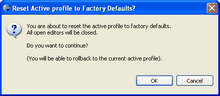
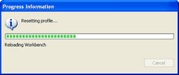
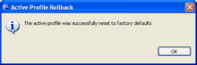

Loading Factory Defaults

To load factory default settings:
- Select the here link (#3 in the image above). The Reset Active profile to Factory Defaults? dialog box displays.

- Click OK to continue or click Cancel to return to the Profile Perspective. The Progress Information dialog box appears showing the progress.

- When complete, the Active Profile Rollback dialog box displays. Click OK.

Related Topics
Profile Perspectives
The General Tab
The Annotation Tab
The Primitive-Type Tab
The Artifacts Tab
Deploying your Profile
Project Profiles
Rolling Back
© copyright 2005, 2006, 2007 Cisco Systems, Inc. - All rights reserved